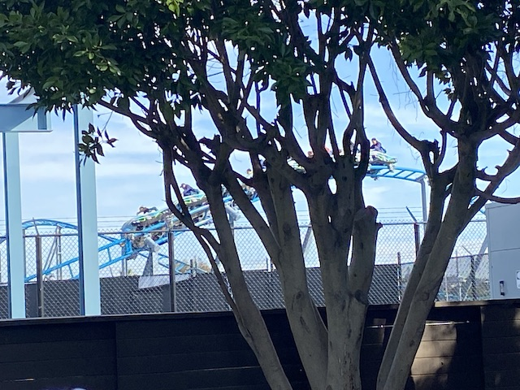
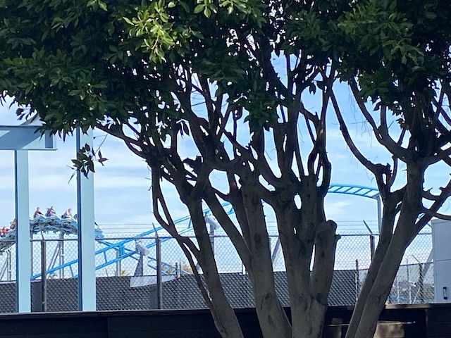
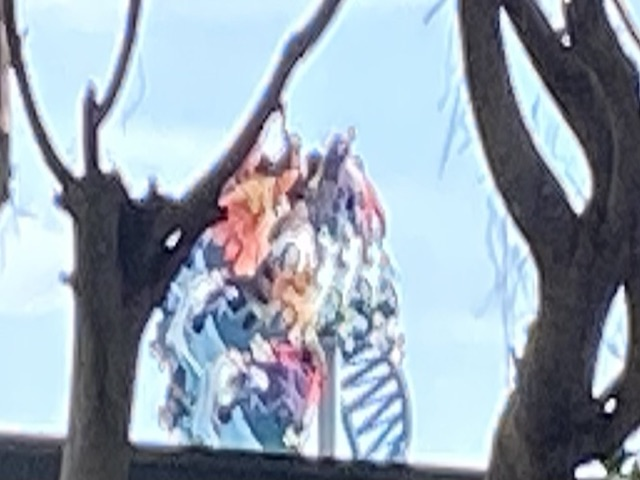
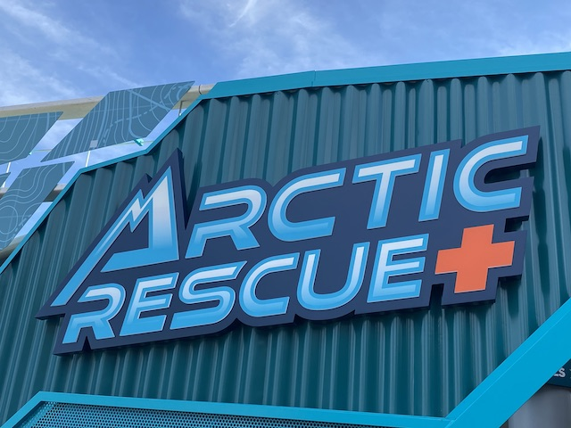
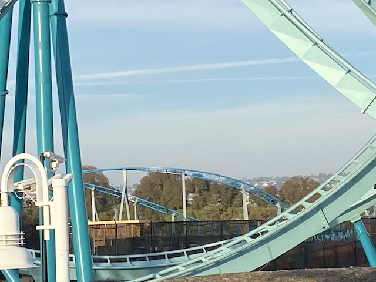

| |
Arctic Rescue Review

Today, we'll be reviewing Arctic Rescue @ Sea World San Diego. This is one of those Intamin Motorbike coasters that have really become a lot more popular in recent years. Yeah. This isn't nearly as good as its much stronger European brother, Juvelen. But that's OK. This is still a really fun ride and a good fit for Sea World San Diego. After learning some cool fun facts about the Arctic, we get in the snowmobile cars, get the lap bar just right, and then we're off!We go around a slow turn right before we head into Launch #1. This isn't a very intense launch by any means. This is honestly about on par with Pony Express (THE BEST RIDE EVER!!!). Though we have a lot more going on this ride. We head straight into a sort of wave hill. It' not very big. But we coast right over it. Still having fun. We then head into a couple low to the ground turns that wind up giving us some good laterals (for a family coaster). We head through a sort of helix turn before dipping back down to the ground. We go through another really small wave turn. Nothing crazy. But we're still having a lot of fun. Go through another low to the ground turns. Yeah. We're not going very fast. But being low to the ground definately helps. We then head straight into Launch #2. And WOW!!! We're going fast now! OK. Nothing truly crazy. But we can definately feel an increase in speed here. We go around another banked turns. And...the faster speed results in more laterals. Go through another bigger wave turn. This is really a lot of fun. Go back down to the ground covered in fake snow (this is decent theming by Modern Sea World standards. At least they tried here unlike with Emperor), passing by another Arctic sign. Go through another sort of banked S Curve, and get a little more laterals. Go through a tiny little hill. Sadly, no airtime here. But we're still having more fun. More banked turns, banking around some shrubbery. Hey! Real plants! Add more of these Sea World! =) We then head straight into Launch #3. This one isn't too intense. But hey. It gives us a nice little kick of speed. Enough to get back everything that we lost. Go then straight into a sort of banked turnaround. It's sort of a wave turn, only turning around instead of in the same direction. Go through a couple more low to the ground turns.....I sense a pattern with this ride. It's very repetitive. But that's OK. I'm having a lot of fun right now. We then rise up a little bit into a smaller turnaround. Hey. Something slightly different. I'm really liking this. And it just keeps on going. How many more turns do we need to go in order to rescue the Arctic? Something tells me that we're just running around the arctic being lost while the others do the actual work, and yet we still get partial credit since...let's be real. That was us back in school. =P Rush by some flags. United States, Canada, Norway,.....Japan!? Why is their flag here!? I mean, I LOVE Japan (Visited and enjoy ALL the countries listed). But....they don't have any land in the Arctic. Not sure what they're doing in an Arctic Rescue. But whatever it is, they helped. Because we go through another S bend and glide straight into the brake run. I know when this ride was first announced, I thought that the ride was gonna be a big waste since....it feels reduntant since they already have Manta. And that'll be the better ride. And...yeah. Manta is a better ride. But....something about Arctic Rescue is just a ton of fun. Yeah. It's pretty similar to Manta and sort of just an inferior version of the ride. But....it still works. Maybe it's the seating. Maybe it's the arctic theming. Maybe it's the 3 launches. But regardless, it's just a really fun ride that I do recommend trying.
6/10
Location: Sea World San Diego
Opened: 2023
Built by: Intamin
Last Ridden: January 15, 2024
Arctic Rescue Photos




Home
|